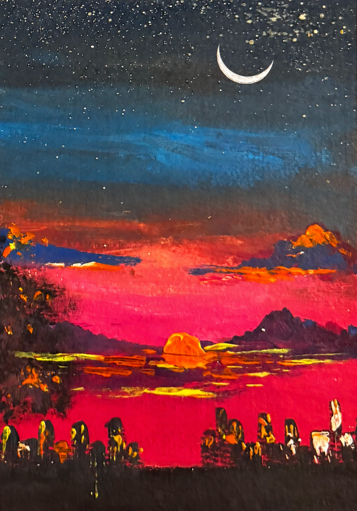
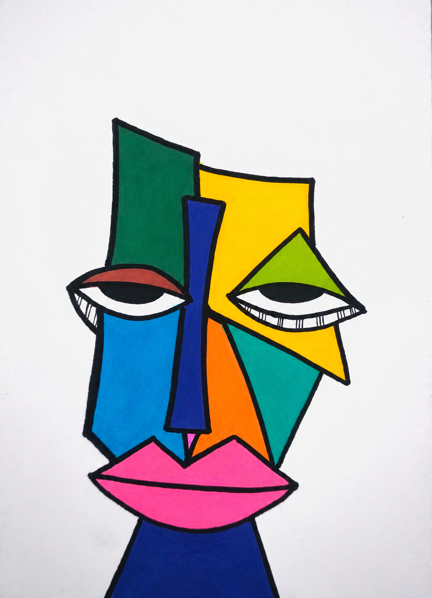
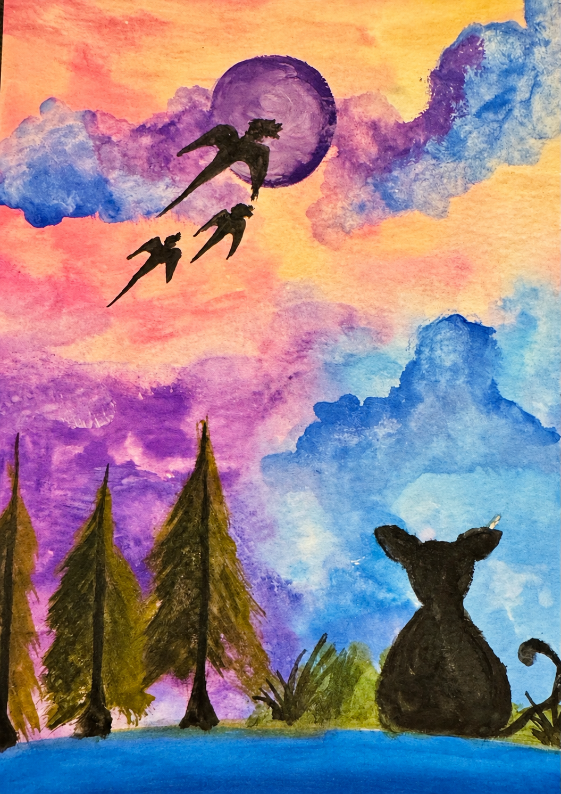
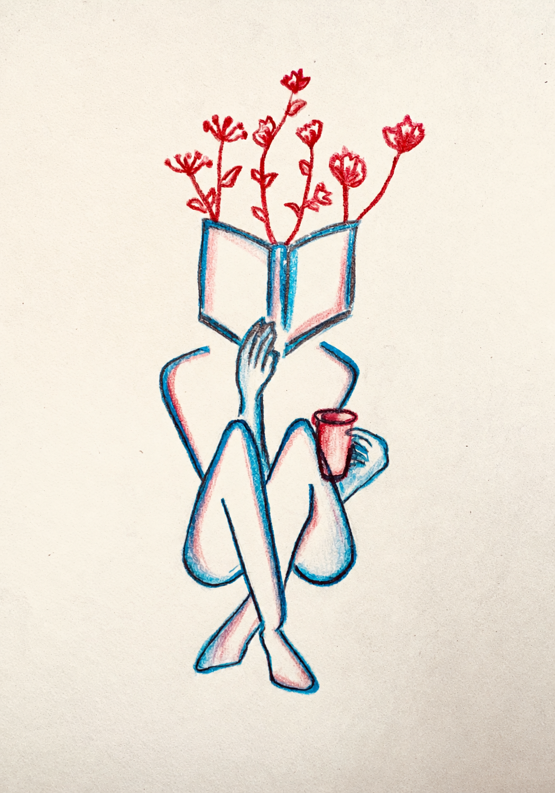

Skip to content
su
.
Shagun Uppal
☾
Night mode
Home
Publications
About & news
Art
Bookshelf
100 Things
Art
A collection of my paintings and sketches.
Artwork / 05
↗
Artwork / 01
↗

Artwork / 02
↗

Artwork / 03
↗
Artwork / 04
↗
Artwork / 07
↗
Artwork / 08
↗

Artwork / 09
↗

Artwork / 06
↗
Close ×
← Previous
Next →